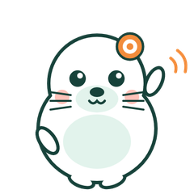

App gratuito para estudantes
Menos tela.
Mais estudo e movimento.
O Foquinho ajuda você a trocar um pouco do tempo de celular por estudo e exercício. Com as suas matérias, as suas provas e os esportes que você curte. Sem culpa, sem ranking, sem cadastro.
Funciona no iPhone e no Android, direto do navegador. No iPhone: abra no Safari e toque em Compartilhar → Adicionar à Tela de Início.
Como funciona
Três passos, sem complicação
Conte o que importa
Suas matérias, as mais difíceis, as provas que estão chegando e os esportes de que você gosta. Tudo opcional e editável.
Receba sugestões na medida
"Revise 10 minutos para a prova de História", "Faça questões da matéria difícil", "Dê uma caminhada curta". Nada genérico.
Marque o tempo e acompanhe
Temporizador de foco com intervalos, pausas ativas, metas diárias e um histórico simples, sem comparação com ninguém.
Recursos
O que vem dentro do Foquinho
Sessões de foco
25/5, 50/10 ou do seu jeito. Pausar, retomar, concluir e registrar com uma observação.
Pausa ativa
Alongamento, caminhada, corrida, futebol, dança, bicicleta e exercício em casa. Filtre por tempo e local.
Plano de estudo
Tarefas em "A estudar", "Em andamento" e "Concluído", com matéria, assunto, duração e prazo.
Metas sem culpa
Meta de estudo, de exercício e, se quiser, de tempo de tela. Passou? Tudo bem. Amanhã é outro dia.
Histórico honesto
Só o que você registrou. Dia sem registro aparece como "sem dados". Apague quando quiser.
Privacidade de verdade
Sem e-mail, sem telefone, sem conta. Tudo fica no seu aparelho. Nenhum dado é vendido ou enviado.

Conheça a Foquinha
Ela te mostra o caminho
A Foquinha é a mascote do Foquinho. Ela aparece para você não se sentir perdido:
- No aplicativo: na primeira vez, ela passa por cada parte (início, temporizador, plano, movimento, histórico e ajustes) e explica para que serve. Quer ver de novo? Em Ajustes tem Rever o tutorial da Foquinha.
- Aqui no site: toque nela no canto da tela. Ela tira as dúvidas mais comuns, ajuda a instalar e faz um passeio pelo site com você.
Instalar
No iPhone ou no Android, em um minuto
Pelo Safari, como um app
- Toque em Usar agora no navegador.
- Toque no botão Compartilhar (quadrado com seta).
- Escolha Adicionar à Tela de Início e confirme.
Instale o aplicativo (APK)
- Toque em Baixar para Android.
- Abra o arquivo Foquinho.apk e permita a instalação quando o celular pedir.
- Toque em Instalar. Pronto: o Foquinho aparece nos seus apps.
Também dá para usar a versão web no Chrome do Android: menu ⋮ → Adicionar à tela inicial.
Perguntas frequentes
Dúvidas comuns
O Foquinho mede meu tempo de celular sozinho?
Não. Nenhum site consegue isso, e no app isso exigiria permissões especiais do Android e da Apple. Você copia o número que o próprio celular mostra em Bem-estar digital (Android) ou Tempo de Uso (iPhone), e ele fica registrado como manual.
Ele bloqueia outros aplicativos?
Não, e nunca finge que bloqueia. Para limites de verdade, use os controles do próprio celular. O Foquinho mostra onde encontrá-los.
Precisa de conta ou e-mail?
Não. Você escolhe um apelido e pronto. Os dados ficam só no seu aparelho; se trocar de celular, use a exportação para levar uma cópia.
Baixei o APK e aparece "app não instalado". E agora?
Se você já tinha uma versão antiga do Foquinho, desinstale-a uma vez e instale a nova. Isso só é preciso uma vez: as próximas versões instalam por cima, sem perder nada.
É pago?
Não. É um projeto escolar, gratuito e sem anúncios.
Por que o APK não está na Play Store?
Por enquanto a distribuição é direta. O Android avisa sobre "fontes desconhecidas" porque o app não veio da loja; é esperado.